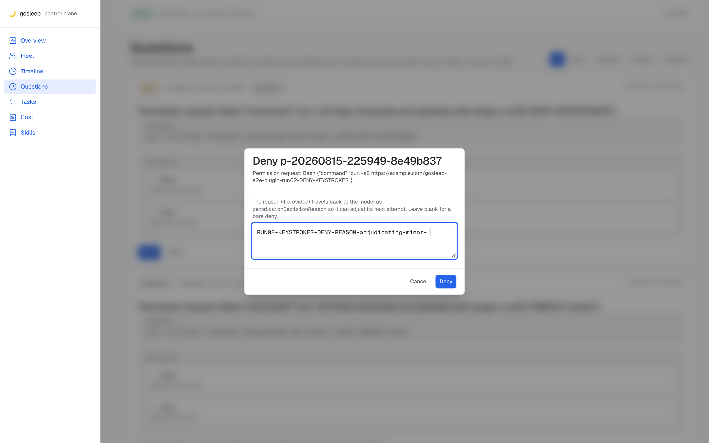
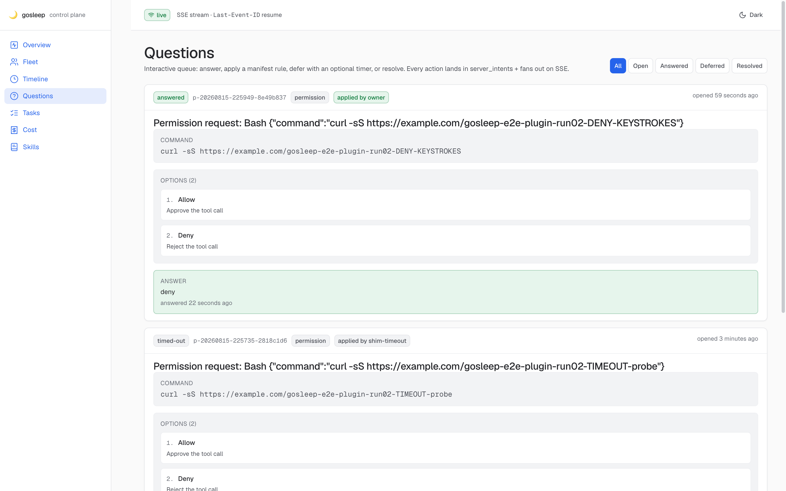

Reason typed via real keystrokes (CDP Input.dispatchKeyEvent) lands in applied and reaches the model — no product bug
Test. Fired a fresh permission shim (p-20260815-225949-8e49b837), clicked Deny on the panel, typed RUN02-KEYSTROKES-DENY-REASON-adjudicating-minor-1 in the reason textbox via the type_text CDP path (real keystrokes, not fill(uid, value)), clicked Deny. Waited on the shim.
DB row after. status=answered · answer_text=deny · applied="RUN02-KEYSTROKES-DENY-REASON-adjudicating-minor-1" · applied_by=owner. Reason string persisted.
Shim stdout. {"hookSpecificOutput":{"hookEventName":"PermissionRequest","decision":{"behavior":"deny","reason":"RUN02-KEYSTROKES-DENY-REASON-adjudicating-minor-1"}}} — exact Claude Code schema. Full server → shim → model round-trip proven.
Verdict. The run-01 quirk was a Chrome DevTools MCP fill(uid, value) implementation detail — it sets .value without dispatching the input events React needs to update controlled state. Real keystrokes (which is what a human at the keyboard does) work end-to-end. No defect ticket needed.

